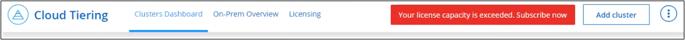

ドキュメントの変更をリクエスト
ドキュメントの変更をリクエスト GitHub で編集
GitHub で編集 寄稿者向けガイド
寄稿者向けガイドCloud Tiering のライセンスをセットアップ
最初のクラスタから階層化をセットアップすると、 Cloud Tiering の 30 日間の無償トライアルが開始されます。無償トライアルの終了後は、クラウドプロバイダのマーケットプレイスから従量課金制の Cloud Manager サブスクリプション、ネットアップからの BYOL ライセンス、またはその両方を組み合わせて Cloud Tiering の料金を支払う必要があります。
さらに読む前に、いくつかのメモを記入してください。
-
クラウドプロバイダのマーケットプレイスで Cloud Manager サブスクリプション（ PAYGO ）にすでに登録している場合は、オンプレミスの ONTAP システムから Cloud Tiering にも自動的にサブスクライブされます。Cloud Tiering * Licensing * タブにアクティブなサブスクリプションが表示されます。再度登録する必要はありません。
-
BYOL Cloud Tiering ライセンスは、 Cloud Manager アカウントに含まれる複数のオンプレミス ONTAP クラスタで使用できるフローティングライセンスです。これは、各クラスタについて _ FabricPool _ ライセンスを購入した以前のものとは異なります。
-
データを StorageGRID に階層化する場合は料金が発生しないため、 BYOL ライセンスや PAYGO の登録は必要ありません。この階層化されたデータは、ライセンスで購入された容量にはカウントされません。
クラウド階層化と PAYGO のサブスクリプションを使用
クラウドプロバイダのマーケットプレイスから従量課金制のサブスクリプションを購入すると、 Cloud Volumes ONTAP システムと Cloud Tiering などの多数のクラウドデータサービスのライセンスを取得できます。
AWS Marketplace からのサブスクライブ
AWS Marketplace で Cloud Tiering を登録して、 ONTAP クラスタから AWS S3 へのデータ階層化の従量課金制サブスクリプションを設定できます。
-
Cloud Manager で、 * Tiering > Licensing * をクリックします。
-
AWS Marketplace で * Subscribe * をクリックし、 * Continue * をクリックします。
-
から登録します "AWS Marketplace"をクリックし、 Cloud Central にログインして登録を完了します。
次のビデオは、プロセスを示しています。
Azure Marketplace からのサブスクライブ
Azure Marketplace から Cloud Tiering をサブスクライブして、 ONTAP クラスタから Azure Blob ストレージへのデータ階層化の従量課金制サブスクリプションを設定できます。
-
Cloud Manager で、 * Tiering > Licensing * をクリックします。
-
Azure Marketplace で * Subscribe * をクリックし、 * Continue * をクリックします。
-
から登録します "Azure Marketplace で入手できます"をクリックし、 Cloud Central にログインして登録を完了します。
次のビデオは、プロセスを示しています。
GCP Marketplace から配信登録する
GCP Marketplace から Cloud Tiering に登録すると、 ONTAP クラスタから Google Cloud ストレージへのデータ階層化の従量課金制サブスクリプションを設定できます。
-
Cloud Manager で、 * Tiering > Licensing * をクリックします。
-
[GCP Marketplace] の下の [Subscribe] をクリックし、 [* Continue * ] をクリックします
-
から登録します "GCP Marketplace"をクリックし、 Cloud Central にログインして登録を完了します。
次のビデオは、プロセスを示しています。
Cloud Tiering BYOL ライセンスを使用します
ネットアップが提供するお客様所有のライセンスは、 2 カ月、 12 カ月、 24 カ月、 36 カ月のいずれかで利用できます。BYOL * Cloud Tiering * ライセンスは、 Cloud Manager アカウントに含まれる複数のオンプレミス ONTAP クラスタで使用できるフローティングライセンスです。クラウド階層化ライセンスで定義された階層化の総容量は、オンプレミスのクラウドクラスタの * すべてで共有されるため、初期ライセンス取得と契約更新が容易になります。
Cloud Tiering のライセンスがない場合は、次の製品を購入してください：
-
mailto ： ng-cloud-tiering@netapp.com ？ subject = ライセンス [ ライセンスを購入するために電子メールを送信 ] 。
-
Cloud Manager の右下にあるチャットアイコンをクリックして、ライセンスを申請してください。
必要に応じて、使用しない Cloud Volumes ONTAP の未割り当てのノードベースライセンスがある場合は、同じ金額と同じ有効期限で Cloud Tiering ライセンスに変換できます。 "詳細については、こちらをご覧ください"。
Cloud Manager の Digital Wallet ページを使用して、 Cloud Tiering BYOL ライセンスを管理します。新しいライセンスを追加したり、既存のライセンスを更新したりできます。
2021 年 8 月 21 日以降、 Cloud Tiering BYOL の新しいライセンス
Cloud Tiering サービスを使用した Cloud Manager 内でサポートされる階層化構成の新しい * Cloud Tiering * ライセンスが、 2021 年 8 月に導入されました。Cloud Manager は、現在、 Amazon S3 、 Azure Blob Storage 、 Google Cloud Storage 、 S3 互換オブジェクトストレージ、 StorageGRID などのクラウドストレージへの階層化をサポートしています。
従来、オンプレミス ONTAP データをクラウドに階層化するために使用していた * FabricPool * ライセンスは、インターネットにアクセスできないサイト（「ダークサイト」とも呼ばれます）の ONTAP 環境でのみ保持されています。ダークサイトに導入する場合は、 System Manager または ONTAP CLI を使用して、各クラスタに FabricPool ライセンスをインストールします。

|
StorageGRID への階層化には、 FabricPool とクラウドの階層化ライセンスは必要ありません。 |
現在 FabricPool ライセンスを使用している場合は、 FabricPool ライセンスの有効期限または最大容量に達するまで、影響はありません。ライセンスの更新が必要な場合や、クラウドへのデータの階層化が中断されないようにするために以前のリリースについては、ネットアップにお問い合わせください。
-
Cloud Manager でサポートされている構成を使用している場合は、 FabricPool ライセンスがクラウド階層化ライセンスに変換され、デジタルウォレットに表示されます。最初のライセンスの有効期限が切れたら、 Cloud Tiering ライセンスを更新する必要があります。
-
Cloud Manager でサポートされない構成を使用している場合は、引き続き FabricPool ライセンスを使用します。 "System Manager を使用した階層化のライセンス設定方法を参照してください"。
2 つのライセンスについて、次の点に注意する必要があります。
| Cloud Tiering ライセンス | FabricPool ライセンス |
|---|---|
複数のオンプレミス ONTAP クラスタで使用できるフローティングライセンスです。 |
クラスタ単位のライセンスであり、 _Every_cluster 用に購入してライセンスを取得します。 |
Cloud Manager のデジタルウォレットに登録されています。 |
この処理は、 System Manager または ONTAP CLI を使用して個々のクラスタに適用されます。 |
階層化の設定と管理は、 Cloud Manager のクラウド階層化サービスを通じて行われます。 |
階層化の設定と管理は、 System Manager または ONTAP CLI を使用して行います。 |
設定が完了したら、無償トライアルを使用して、 30 日間のライセンスなしで階層化サービスを使用できます。 |
設定が完了すると、最初の 10TB のデータを無料で階層化できます。 |
Cloud Tiering のライセンスファイルを入手します
Cloud Tiering ライセンスを購入したら、 Cloud Tiering のシリアル番号と NSS アカウントを入力するか、 NLF ライセンスファイルをアップロードして、 Cloud Manager でライセンスをアクティブ化します。次の手順は、 NLF ライセンスファイルを取得する方法を示しています。
-
にサインインします "ネットアップサポートサイト" [ システム ] 、 [ ソフトウェアライセンス ] の順にクリックします。
-
Cloud Tiering ライセンスのシリアル番号を入力します。

-
[* License Key] で、 [* Get NetApp License File* ] をクリックします。
-
Cloud Manager アカウント ID （サポートサイトではテナント ID と呼ばれます）を入力し、 * Submit * をクリックしてライセンスファイルをダウンロードします。

Cloud Manager アカウント ID は、 Cloud Manager の上部にある「 * Account * 」ドロップダウンを選択し、アカウントの横にある「 * Manage Account * 」をクリックすると確認できます。アカウント ID は、 [ 概要 ] タブにあります。
Cloud Tiering BYOL ライセンスをアカウントに追加します
Cloud Manager アカウントの Cloud Tiering ライセンスを購入したら、 Cloud Tiering サービスを使用するには、 Cloud Manager にライセンスを追加する必要があります。
-
[ すべてのサービス ] 、 [ デジタルウォレット ] 、 [ データサービスライセンス ] の順にクリックします。
-
[ ライセンスの追加 ] をクリックします。
-
_ ライセンスの追加 _ ダイアログで、ライセンス情報を入力し、 * ライセンスの追加 * をクリックします。
-
階層化ライセンスのシリアル番号があり、 NSS アカウントを知っている場合は、 * シリアル番号を入力 * オプションを選択してその情報を入力します。
お使いのネットアップサポートサイトのアカウントがドロップダウンリストにない場合は、 "NSS アカウントを Cloud Manager に追加します"。
-
階層化ライセンスファイルがある場合は、 * ライセンスファイルのアップロード * オプションを選択し、プロンプトに従ってファイルを添付します。

-
Cloud Manager ライセンスが追加されて、 Cloud Tiering サービスがアクティブになります。
Cloud Tiering BYOL ライセンスを更新します
ライセンスで許可された期間が有効期限に近づいている場合や、ライセンスで許可された容量が上限に達している場合は、 Cloud Tiering で通知されます。

このステータスは、 [ デジタルウォレット ] ページにも表示されます。

Cloud Tiering ライセンスは、期限が切れる前に更新できます。これにより、クラウドへのデータの階層化を中断することなく実行できます。
-
Cloud Manager の右下にあるチャットアイコンをクリックして、特定のシリアル番号の Cloud Tiering ライセンスに、契約期間を延長するか容量を追加するかを申請します。
ライセンスの支払いが完了し、ネットアップサポートサイトに登録されると、 Cloud Manager はデジタルウォレットとデータサービスのライセンスページのライセンスを自動的に更新し、 5 分から 10 分で変更が反映されます。
-
Cloud Manager でライセンスを自動更新できない場合は、ライセンスファイルを手動でアップロードする必要があります。
-
[ データサービスライセンス ] タブの [ デジタルウォレット ] ページで、をクリックします
 アイコン"] 更新するサービスシリアル番号の場合は、 ［ * ライセンスの更新 * ］ をクリックします。
アイコン"] 更新するサービスシリアル番号の場合は、 ［ * ライセンスの更新 * ］ をクリックします。 ボタンを選択するスクリーンショット。"]
ボタンを選択するスクリーンショット。"] -
_Update License_page で、ライセンスファイルをアップロードし、 * ライセンスの更新 * をクリックします。
Cloud Manager によってライセンスが更新され、 Cloud Tiering サービスがアクティブな状態で維持されます。